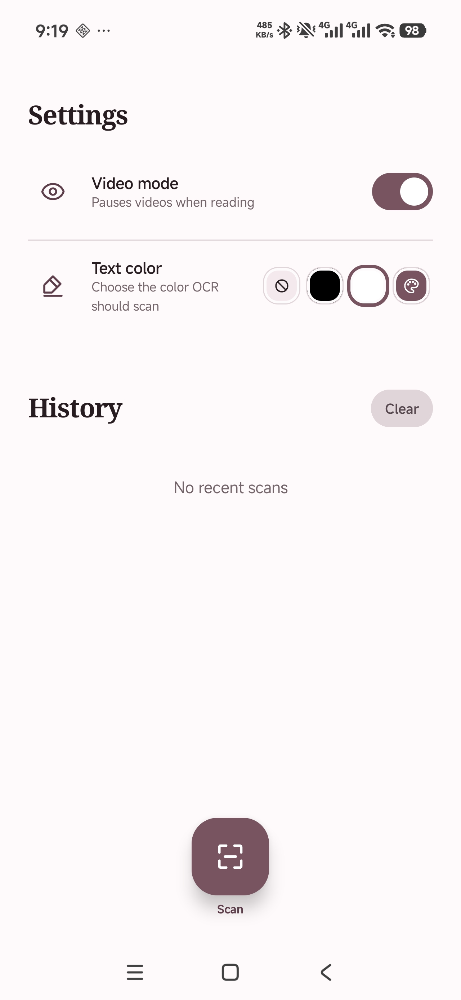
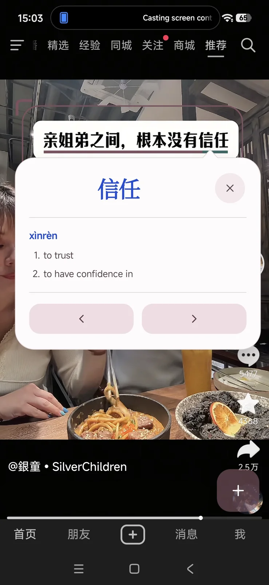
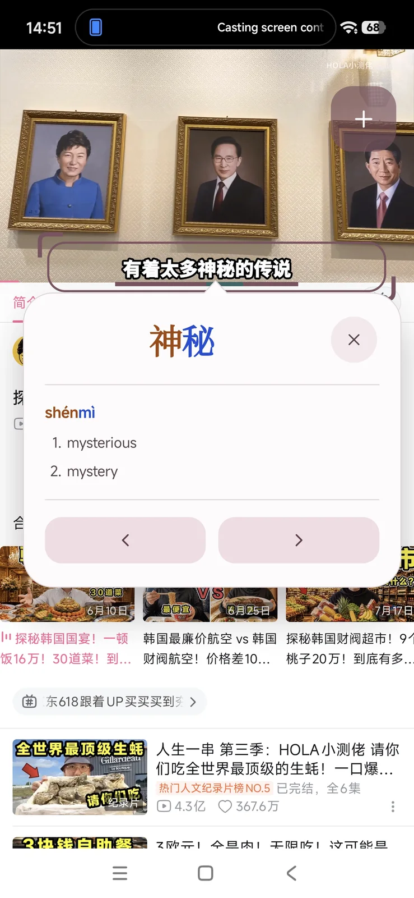

android screen reader for Chinese learners
Turn subtitles into words you can tap.
Chinese Reader stays above the videos you watch and the games you play. It recognizes on-screen Chinese text, lets you open a definition for the words you don't know, and pauses video so you have time to read.
- Live on-screen OCR
- Automatic video pause
- CC-CEDICT definitions


Video subtitles
Read the Chinese that is baked into the video.
Hardcoded subtitles cannot be selected or copied. Chinese Reader continuously scans the area you choose, underlines recognized words, and keeps each definition one tap away.
- Pause when readingOpening a word can pause playback so you have the needed time to read. When closing, playback will resume automatically.
- Target the subtitle colorChoose black, white, custom, or no specific text color. This helps us to find the text more accurately.

Video-game text
You don't need to leave the game to study the language.
Dialogue boxes and interface text become cliclable. Move and resize the scanned area, tap recognized words, then continue the game without switching apps.
- Movable scan areaPosition the frame around dialogue, menus, or item descriptions.
- Lock the areaHide the frame while leaving recognized words decorated and clickable.
- Move word by wordUse previous and next actions to inspect the full text, bit by bit, so you can slowly decode the whole phrase.
Designed specifically for games and video
The whole idea grew from my frustration with Pleco.
Pleco is an amazing software. It still is (and will be) the app we use the most when studying. But it's too clumsy for watching videos, needing a lot of clicks to work. Games also need tons of patience.
| Feature | Chinese Reader | Pleco OCR |
|---|---|---|
| Recognition | LiveContinuously read the selected screen area | ManualPress the accessibility button to print the screen and read it |
| Video playback | Automatic pauseStops while you are reading, and continues when you are done | Continues playingThe video keeps playing while your screen is frozen in time |
Community dictionary
Definitions powered by CC-CEDICT.
Chinese Reader uses the Creative Commons CC-CEDICT Chinese–English dictionary. You can consult the same dictionary data through MDBG.
Consult the dictionary at MDBGThere are a lot of ways to study Chinese